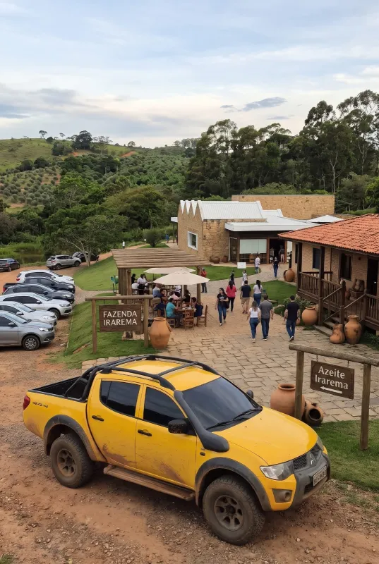
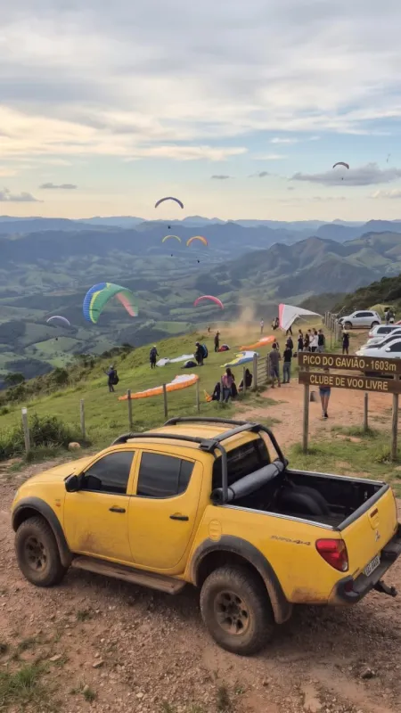
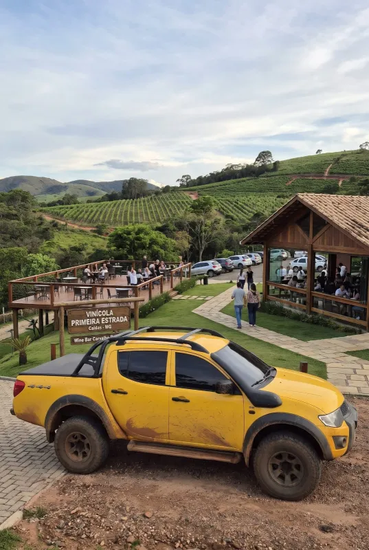

Recanto Japonês e Fonte dos Amores
R$ 290 por ciclista
Cicloturismo em Poços de Caldas MG
Conheça e aventure-se em nossa cidade de E-Bike.
O tour mais completo de Poços de Caldas MG: um circuito de até 5 horas que cruza os pontos turísticos da nossa linda cidade. Ideal para quem quer conhecer a cidade em detalhes.
Os roteiros preferidos dos turistas, em circuitos urbanos ou MTB.
Roteiros da LocBike
Explore Poços de Caldas de um jeito diferente, pelos pontos turísticos da cidade ou pelas trilhas da região. Temos experiências únicas para todos os estilos e níveis.
Os cartões-postais de Poços de Caldas em um só pedal de E-Bike: Thermas Antônio Carlos, Serra do Cristo, Palace Casino, Praça Pedro Sanches, Fonte dos Amores, Recanto Japonês e muito mais, com paradas para fotos e as histórias da cidade.
Ver roteiros urbanosPoços de Caldas vista de outro jeito: um pedal ao anoitecer pelas praças e avenidas iluminadas do centro, com guia e paradas nos pontos turísticos. Programa diferente para fazer em família ou com os amigos.
Pedale com a gente pelas trilhas da nossa região e suas lindas paisagens: fazendas de café e azeite, vinícola, picos e mirantes.
Ver roteiros MTBRoteiros urbanos
Os cartões-postais de Poços de Caldas em um só pedal de E-Bike: Thermas Antônio Carlos, Serra do Cristo, Palace Casino, Praça Pedro Sanches, Fonte dos Amores, Recanto Japonês e muito mais, com paradas para fotos e as histórias da cidade. E, à noite, a cidade iluminada no Passeio Noturno.
R$ 290 por ciclista
R$ 350 por ciclista
R$ 390 por ciclista
R$ 290 por ciclista
Roteiros MTB
Pedaladas guiadas de E-Bike por estradas rurais e serras da região: fazendas de café e azeite, vinícola, picos e mirantes. Todos incluem E-Bike, guia, apoio mecânico básico e seguro ciclista.

a partir de R$ 690
a partir de R$ 890

a partir de R$ 890
a partir de R$ 690
a partir de R$ 890
Roteiros da LocBike
Cicloviagens pelas rotas mais bonitas da região e de Minas Gerais, com guia credenciado, E-Bikes e veículo de apoio da LocBikePocos.

A rota de peregrinação mais famosa do Brasil, pedalada pela Serra da Mantiqueira.
Próximas saídas

Chapadões, paredões de pedra e cachoeiras onde nasce o Rio São Francisco.

Um giro pelas cidades e represas que contornam a cratera do antigo vulcão.
Bikes para a cidade, a trilha e o asfalto, para pedalar no seu ritmo.
Para o centro e os bairros da cidade.
R$ 90 por período
Suba as ladeiras sem esforço.
R$ 90 por período
Aventura nas trilhas da serra.
R$ 90 por período
Off-road com pedal assistido.
R$ 490 por período
Velocidade e desafio no asfalto.
R$ 120 por período
Aro 16 a 26, para pedalar em família.
R$ 80 por período
Capacete, transbike, pedal clip e baterias.
a partir de R$ 25 por período
Passeios da LocBike
Passeios pelas estradas rurais e serras da região a bordo de um veículo 4x4: fazenda de café e azeite, vinícola e o Pico do Gavião, com guia e todo o conforto, sem precisar pedalar.

R$ 590 até 4 pessoas

R$ 990 até 4 pessoas

R$ 990 até 4 pessoas
Quem somos
Com mais de 10 anos de experiência e primeira agência de cicloturismo da região de Poços de Caldas, a LocBike é uma empresa familiar especializada em cicloturismo, passeios guiados e locação de bicicletas, com sede em Poços de Caldas – MG. Nosso objetivo é proporcionar experiências inesquecíveis sobre duas rodas, seja para quem deseja explorar as belezas da nossa cidade ou encarar grandes desafios pelas montanhas da região.
Oferecemos uma frota diversificada para atender a todos os perfis de ciclistas, desde modelos urbanos, infantojuvenis e bicicletas de estrada (Road/Speed) até Mountain Bikes (MTB) e bicicletas elétricas (E-Bikes / E-MTB Full Suspension). Além das bikes, disponibilizamos equipamentos essenciais como capacetes, alforjes, carretinhas e acessórios de transporte.
Para os apaixonados pelo pedal de longa distância, prestamos suporte e estrutura completa para apoiar ciclistas no Caminho da Fé, na Serra da Canastra, na Rota do Vulcão e em outras rotas da região. Seja para um passeio em família no fim de semana ou para uma expedição de cicloturismo, a LocBike entrega qualidade, segurança e a liberdade que só a bicicleta proporciona.
Vale-presente
Não é só um passeio: é um presente cheio de memórias.
Sim. Sua segurança vem sempre em primeiro lugar.
Sim, principalmente em períodos de férias e feriados nacionais.
Sim, mediante reserva e agendamento.
Sim. Danos causados por mau uso são cobrados à parte.
Alguns modelos das nossas E-Bikes permitem o uso de cadeirinha infantil, que deve ser instalada com antecedência.
Não. Fazemos passeios a partir de 1 ciclista.
Foto da CNH ou do RG, comprovante de endereço atual e, para turistas, comprovante de hospedagem.
Sim. A reserva é confirmada após a conclusão do pagamento.
Pix, dinheiro ou cartão de crédito parcelado (com os juros da maquininha).
Contato
Reserve seu passeio ou tire suas dúvidas pelo WhatsApp.